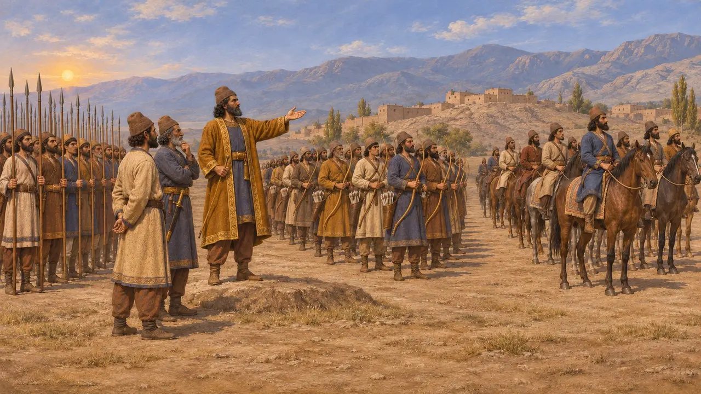
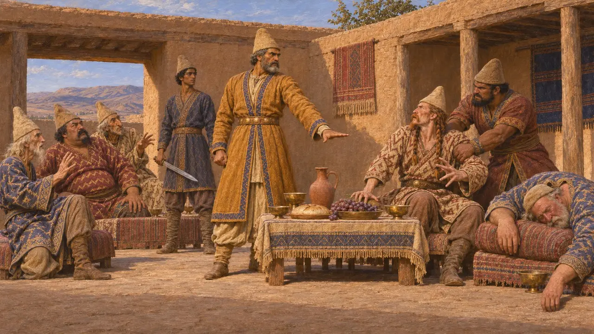
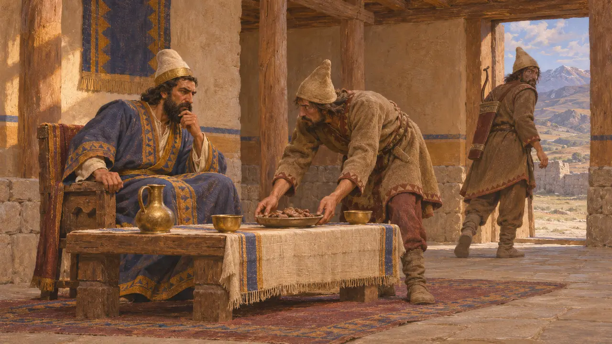
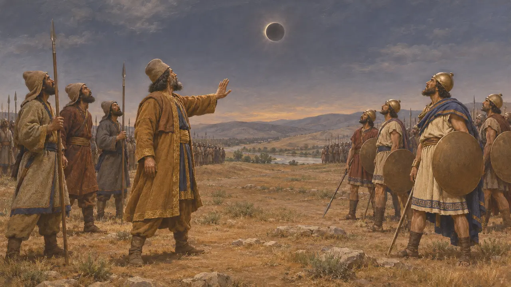
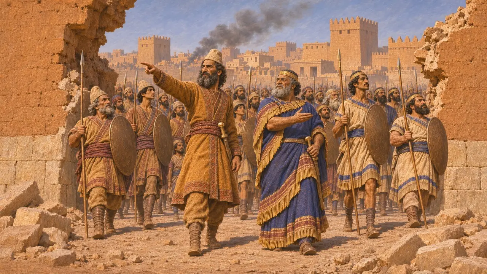
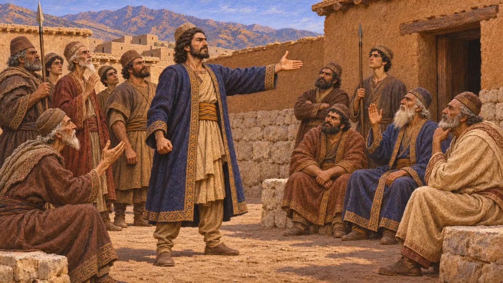

Cyaxares
Median king of the later seventh and early sixth century BCE, claimed as an ancestor by Fravartish
Cyaxares was remembered by the Greeks as the king who made Media a great power. Herodotus credits him with reorganising the Median army, fighting the Lydians and taking Nineveh. Darius's Behistun inscription shows that the rebel Fravartish later claimed descent from him.
In the game: The game names Cyaxares only in Chronicle entries and event articles, such as the revolt of Fravartish. He has no figure, place or mechanic of his own. The note that he gave Median boys to Scythian exiles to train follows Herodotus's tale, which is told as a moral story.

Herodotus's Cyaxares
Ancient accountHerodotus says Cyaxares was the son of Phraortes and the father of Astyages. He reports that Cyaxares was the first to divide the Median troops into separate spear, archer and horse units, where they had earlier been mixed together. Herodotus treats this reform as the basis of Median strength.
Herodotus 1.102-103

The Scythian years
Ancient accountHerodotus says Scythians invaded Media while Cyaxares was besieging Nineveh, defeated the Medes, and ruled Asia for twenty-eight years. He says Cyaxares then killed many of them at a banquet and recovered his power. Historians treat the length and the details of this episode with caution.
Herodotus 1.103-106

The exiles and the banquet of flesh
Later legendHerodotus tells that Cyaxares took in Scythian exiles and gave them Median boys to learn the Scythian language and archery. When they came back from hunting with no game, he says, they served him the flesh of a boy and fled to Lydia. This reads as a tale shaped by a moral, and not as a firm record.
Herodotus 1.73

War with Lydia and the eclipse
DisputedHerodotus says Cyaxares fought Alyattes of Lydia for six years, and that a solar eclipse, which he says Thales had foretold, stopped a battle. He says Syennesis of Cilicia and Labynetus of Babylon arranged the peace, sealed by a marriage between Alyattes' daughter and Astyages. The eclipse is usually dated to 585 BCE, but modern historians dispute the identification and the date.
Herodotus 1.74

Nineveh and the Babylonian alliance
DisputedHerodotus says Cyaxares captured Nineveh. The Babylonian Chronicle of the fall of Nineveh, a document from the time, shows that the city fell in 612 BCE to the Babylonians and the Medes together. It names the Median king as Umakishtar, the Babylonian form of Cyaxares, fighting beside Nabopolassar of Babylon, not alone as in Herodotus. How large the Median role was cannot be settled from the sources.
A. K. Grayson, Assyrian and Babylonian Chronicles, 1975

Fravartish's claim
In the recordIn the Behistun inscription Darius says that Fravartish, a Median rebel, called himself Khshathrita and claimed descent from Cyaxares, whom the text names Uvakhshtra. The claim shows that the name still carried weight among the Medes about sixty years after his death, though Darius presents it only as a lie.
DB §24
Sources
- Herodotus 1.73-74, 1.102-106
- DB §24
- A. K. Grayson, Assyrian and Babylonian Chronicles, 1975
- P. Briant, From Cyrus to Alexander, 2002